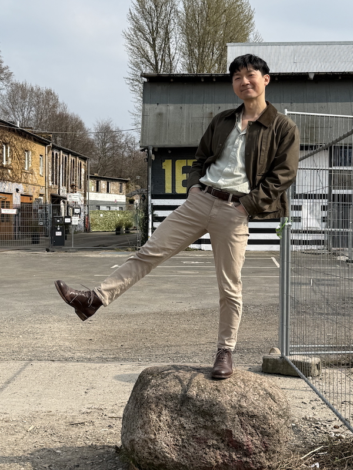

My name is Ken,
and I make charts using code. My interests lie at the intersection of data analysis, communication, web development, and graphic design.
Based in Berlin since 2024.
Projects

Other works
Kazakhstan's resource economy: diversification through global value chains (contributor). 2024. Asian Development Bank.Pakistan's economy and trade in the age of global value chains . 2022. Asian Development Bank.- Recent trends in global value chains (co-author). 2021. Chaper in
Global value chain development report 2021: beyond production . Asian Development Bank, World Trade Organization, and others. - The COVID-19 shock and the two faces of global value chains. 2021. Chaper in
Key indicators for Asia and the Pacific 2021 . Asian Development Bank. - Landed elites and human capital accumulation in America's Philippines, 1903–1939. 2019. Master's thesis. The University of Tokyo.